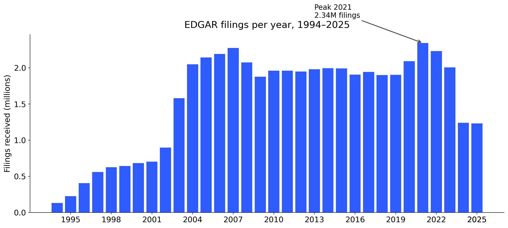
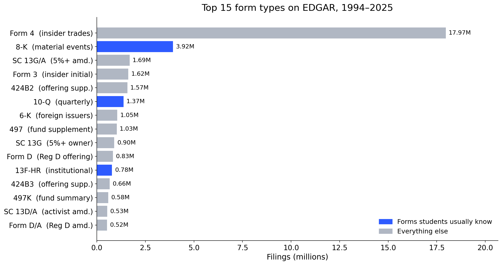
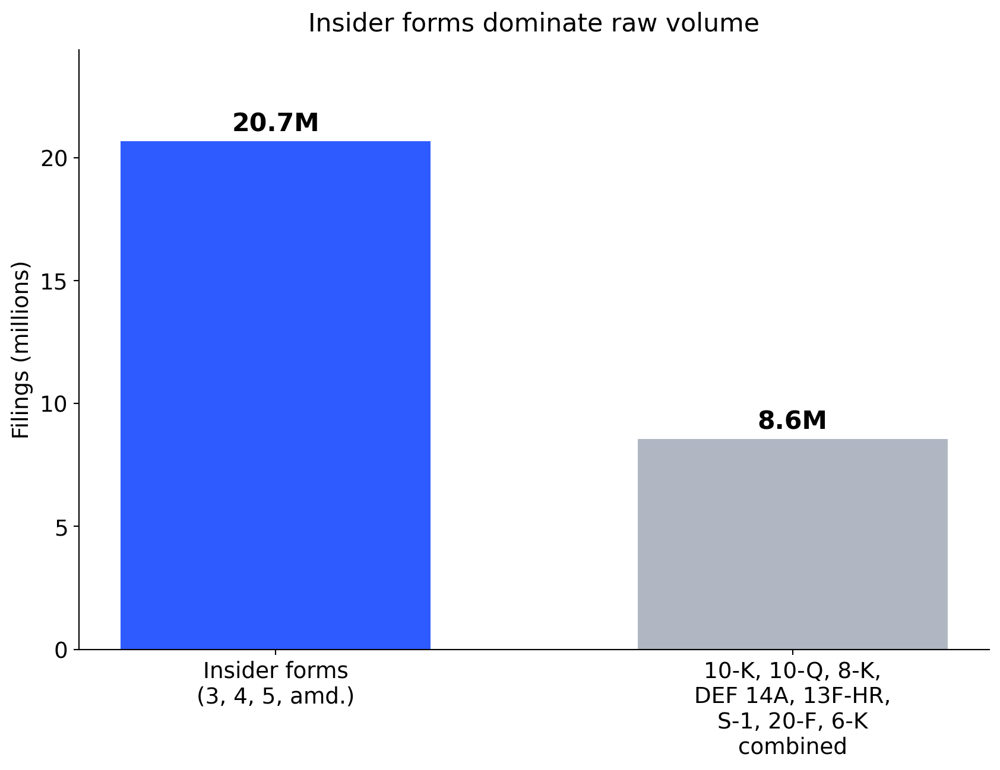
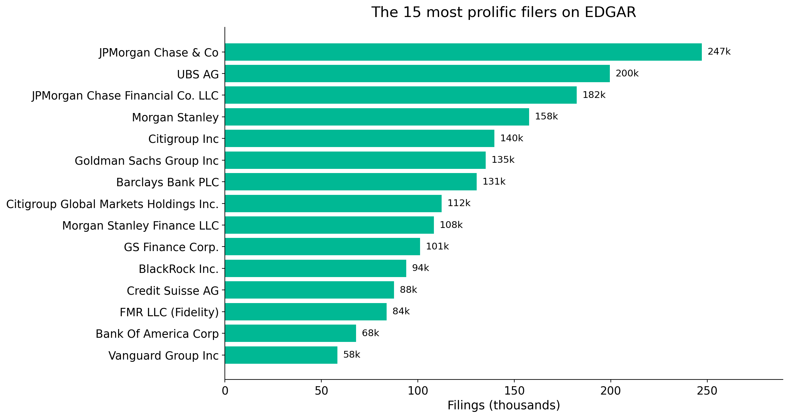
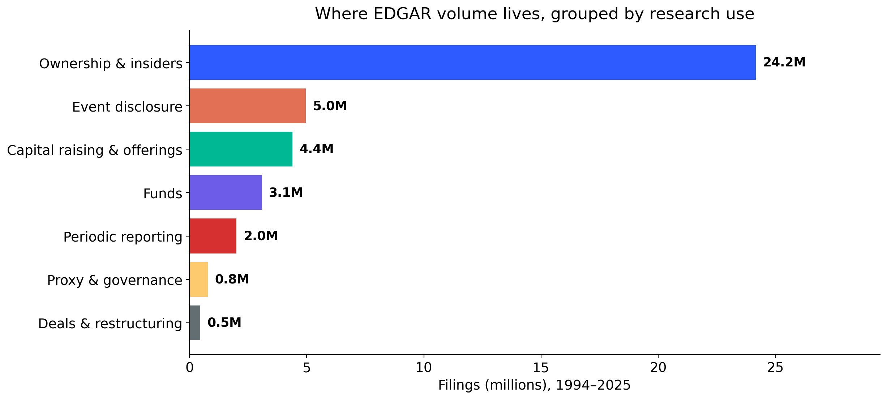
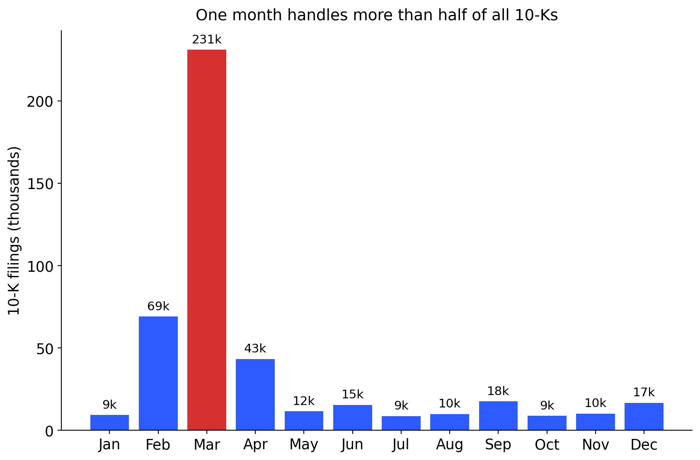
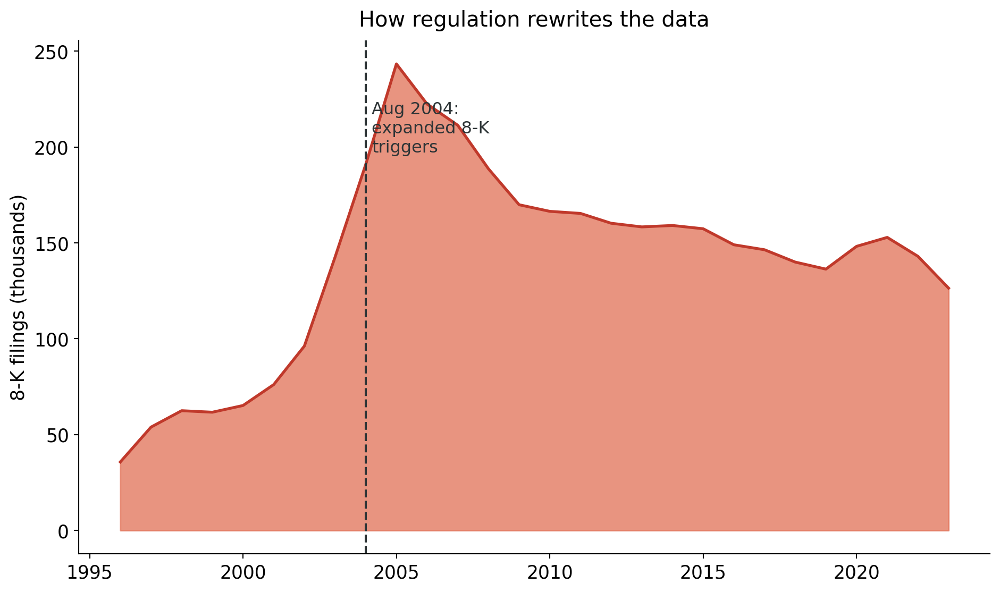
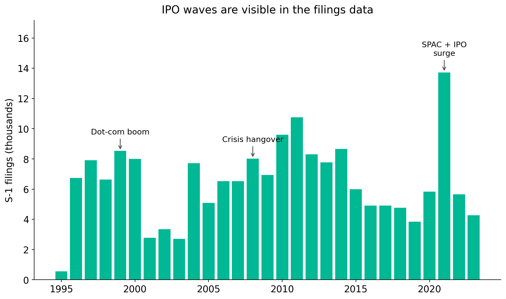

Information Extraction via (Seek)Edgar
Department of Applied Finance; Macquarie University FinTech and Banking Research Centre
2026-04-23
Firms disclose strategy, risks, transactions, ownership, governance, contracts, and financials.
These disclosures are:
The key opportunity is not just reading filings. It is converting disclosure into research variables.
A filing can be read as:
So filings speak to many fields:
Filings
49.7M+
filings on EDGAR, 1994–2025.
Filers
943k+
unique filer identifiers (CIKs).
Annual pace
~2 million
filings received per year since 2004.
Every business day
~8,000
new filings land on EDGAR on a typical business day.
Searches
~24 billion
online searches of EDGAR per year (FY 2025).
Coverage
Since 1993
mandatory electronic filing phased in 1993–1996.
Counts computed from the SEC EDGAR full-index. Search volume from the SEC FY 2025 Congressional Budget Justification.

The step-up in 2003–2004 reflects widening 8-K triggers and expanded ownership-reporting rules. Each regulatory change leaves a fingerprint in the data.

Only 4 of the top 15 forms are part of the standard MBA / finance curriculum. Most research variables live in the grey bars.
Form 4 is a one-page filing that an officer, director, or 10% shareholder submits within two business days of trading their company’s shares.
Research idea
Do insiders sell systematically before negative news? Do director purchases signal board confidence? Form 4 gives you the raw material.


Not Apple. Not Tesla. The most prolific filers are investment banks, asset managers, and their structured-product issuing vehicles submitting thousands of offering supplements and ownership reports. The “firm” in your data is not always the “firm” in your theory.

Periodic 10-K / 10-Q filings are a small share of EDGAR volume. The archive is far broader than the forms we teach first.
Breadth
One archive covers listings, ownership, governance, material events, capital raising, deals, and contracts.
Longitudinal depth
Many firms have decades of filings, enabling within-firm designs.
Granularity
Items, sections, tables, XBRL tags, exhibits, signatures. Each layer supports a different empirical question.
Accountability
Disclosures are legally consequential. This is why they are often more careful, more consistent, and more comparable than press releases or pitch decks.
Filings are imperfect, strategic, and sometimes boilerplate. But those features can themselves become research objects.
EDGAR: Electronic Data Gathering, Analysis, and Retrieval.
“SEC filings” is a shorthand. The set also includes registration statements, proxy materials, insider filings, fund filings, and exhibits. Each has a different research purpose.
Stop thinking in form codes. Think in research use.
Periodic reporting
Event disclosure
Ownership and trading
Governance and shareholder process
Capital raising and listing
Deals and restructuring
Exhibits
The form is only the starting point. The research variable may live in an item, a table, or an exhibit.
The recurring narrative of the firm.
Standard sections (10-K):
Things researchers have measured:

Most U.S. firms have a December fiscal year-end. Large filers must submit their 10-K within 60 days, others within 75–90 days. The calendar shapes the data.
When something material happens.
8-K can report:
6-K transmits material information disclosed by foreign issuers abroad.
Research idea

Teaching moment: the SEC’s 2004 rule change more than doubled 8-K volume. Rule changes and data go together.
Used to study:
13F has reporting thresholds and covers only certain managers and securities. Do not treat it as the complete institutional portfolio.
DEF 14A is a dense data source in itself.
Three panels inside one proxy:
Research idea
A single DEF 14A can yield director-level, executive-level, and proposal-level panels. Link these to outcomes in periodic filings to study governance mechanisms. The entire E-index literature (Bebchuk et al. 2009) started from proxy reading.
Firms telling their story to investors.
Why this matters for research:

Market history is written in these filings. Dot-com (1999–2000), the post-crisis freeze (2008–2009), and the 2021 SPAC / IPO wave all show up as bumps in the S-1 series.
Most students stop at the main filing. Much of the richest data is attached.
Exhibits can contain:
For many research questions, the exhibit is the dataset.
| Discipline | Filing object | Example idea |
|---|---|---|
| Finance | EX-10 credit agreements | Contract terms and investment |
| Accounting | 10-K footnotes | Estimates and reporting quality |
| Management | DEF 14A | Board structure and strategy |
| IS | 10-K risk factors | Cyber and AI risk disclosure |
| Discipline | Filing object | Example idea |
|---|---|---|
| Entrepreneurship | S-1 / F-1 | Founder control and IPO outcomes |
| Marketing | 10-K business sections | Customer concentration and value |
| IB | 20-F / 6-K | Geopolitical and regulatory exposure |
| Political economy | 8-K, DEF 14A | Regulation and corporate response |
Pick a construct you care about. Then ask: which filing would be required to disclose it?
The literature has turned EDGAR into a source of original constructs, treatments, and panels. Four overlapping waves.
I. Text as data. Two decades of measuring language.
II. Events as treatments. Dated disclosures as empirical experiments.
III. Ownership and influence. Who holds, who trades, who votes.
IV. Pulling new constructs from text. Risk, strategy, and technology measured at the firm-year.
The point is not to replicate these papers. It is to recognise that every wave opened new variables for fields far beyond where they started. Your dissertation can do the same.
From readability to sentiment to firm networks.
For any field
The methods started in finance and accounting. The applications are open in every business discipline.
Dated disclosures support clean empirical designs.
Research idea
After a major regulation (climate rule, AI rule, cyber rule, human-capital rule), firms must say something new. That rule change is the event. That new language is the data.
Who holds, who trades, who votes.
For any field
Purpose-built firm-level variables that did not exist ten years ago.
Why this matters for you
Each of these measures did not exist before someone went into filings and built it. The next firm-level measure is waiting for someone in your cohort to construct it.
Research idea
What construct does your field care about that is not in Compustat, WRDS, or any proprietary database? There is a good chance firms already disclose it somewhere.
Question
Does the quality of lender screening shape M&A performance?
Data challenge
Detailed loan contract terms are not in standard databases.
Filing opportunity
Loan agreements are disclosed as exhibits to 8-Ks, 10-Ks, and 10-Qs.
Design
Hand-collect loan agreements, link to syndicated loan data, then link to M&A deals.
Practical rule
A strong filing project often begins with reading twenty filings very carefully.
Narrative sections that researchers commonly use:
What text can measure:
Boilerplate language is not automatically noise. Sometimes the template itself is the object of interest. Sometimes a deviation from the template is. Cohen et al. (2020) built an entire return-predictability paper out of how firms change their 10-K language year over year.
From ownership and proxy data:
Firms discuss technology in business descriptions, risk factors, MD&A, and sometimes 8-Ks.
Possible research angles:
Do not treat every mention of “AI” as adoption. Start with careful validation.
Beyond U.S. domestic firms.
Useful for:
Comparability is not automatic. Rule differences, audit regimes, and language translation all shape what can be measured.
Do not automate before you understand what the relevant disclosure actually looks like.
The point of the pilot is not to build the final dataset. It is to prove that the signal exists and that you can recognise it reliably.
Think of each filing as layered.
| Layer | What it contains | Typical extraction |
|---|---|---|
| Metadata | CIK, accession, form, filing date | API / index |
| Sections | Items, MD&A, risk factors | HTML parsing |
| Tables | Compensation, financials, ownership | Table parsing |
| XBRL | Structured accounting facts | XBRL API |
| Text | Narratives, footnotes | NLP / LLM |
| Exhibits | Contracts, agreements, charters | Exhibit indexes |
Different layers require different extraction methods. Matching the layer to the method is the core of a sound pipeline.
Start in the browser, not in Python.
EDGAR offers:
Try phrases that should reveal the mechanism:
Read the first twenty results carefully. What is a true positive? What is a false positive? Write it down.
Match the tool to the stage of the project.
| Tool | Best for | Watch out for |
|---|---|---|
| EDGAR web search | Official access, browsing, full-text search | Manual pace |
| SEC APIs | Reproducible downloads, submissions, XBRL | Careful request handling |
| SeekEdgar | Exploratory search, no-code extraction, tables, footnotes, MD&A | Access and subscription |
| Python | Flexible, reproducible pipelines | Validation and maintenance |
Exploration and production are different tasks. It is normal to use different tools for each.
From CIK to filing metadata.
import requests
import pandas as pd
headers = {
"User-Agent": "Your Name your.email@example.com"
}
cik = "0000320193" # Apple Inc.
url = f"https://data.sec.gov/submissions/CIK{cik}.json"
data = requests.get(url, headers=headers, timeout=30).json()
recent = pd.DataFrame(data["filings"]["recent"])
recent[["form", "filingDate", "accessionNumber", "primaryDocument"]].head(10)Always include a real User-Agent with contact details when making scripted SEC requests. Be patient with request rates.
From simple to complex, pick the lowest rung that works.
Higher complexity is not always better. A validated keyword rule can outperform a black-box classifier for a well-defined construct.
If you cannot defend the extraction, you cannot defend the paper.
Minimum practice:
The most common weakness in filing-based research is not access. It is unvalidated extraction.
| Pitfall | Fix |
|---|---|
| Treating form type as content | Inspect items, sections, and exhibits |
| Confusing filing date and event date | Extract both and justify timing |
| Ignoring amendments | Track /A filings and restatements |
| Ignoring exhibits | Search exhibit indexes explicitly |
| Overusing keywords | Validate semantic meaning |
| Assuming comparability over time | Account for rule changes and templates |
| Undocumented parsing | Build a reproducible protocol |
| LLM extraction without audit | Use human validation samples |
Public does not mean effortless.
Good filing research looks like good archival research. The archive is large, but the discipline is the same: document, validate, attribute.
A four-step starter plan.
The goal of the first week is not a full dataset. It is to prove that the signal exists and that you can detect it reliably.
Corporate filings are not just documents to read. They are empirical traces of firm behaviour.
| Family | Examples | Typical research use |
|---|---|---|
| Periodic reports | 10-K, 10-Q, 20-F, 40-F | Business, risks, financials, MD&A |
| Current reports | 8-K, 6-K | Events, agreements, management changes |
| Ownership | 13D, 13G, 13F, Forms 3/4/5 | Ownership, activism, insider trades |
| Proxy | DEF 14A, PRE 14A | Boards, pay, votes, proposals |
| Registration | S-1, F-1, S-3 | IPOs, offerings, narratives |
| Deals | S-4, merger proxy, tender offers | M&A, restructuring, control |
| Exhibits | EX-2, EX-3, EX-10 | Contracts, charters, material agreements |
Core structured endpoints:
https://data.sec.gov/submissions/CIK##########.jsonhttps://data.sec.gov/api/xbrl/companyfacts/CIK##########.jsonhttps://data.sec.gov/api/xbrl/companyconcept/CIK##########/us-gaap/<Tag>.jsonhttps://data.sec.gov/api/xbrl/frames/us-gaap/<Tag>/USD/CY2019Q1I.jsonTwo practical rules:
The primary document filename comes from the submissions JSON. Do not hard-code filenames unless verified against the index.
A protocol template that travels well across disciplines.
| Field | Definition | Source | Extraction rule | Validation |
|---|---|---|---|---|
| AI disclosure | Firm discusses AI as capability or strategy | 10-K Item 1, Item 7 | keyword screen + manual coding | 100 random filings |
| Cyber incident | Material cybersecurity event | 8-K | item-based + keyword screen | all positives checked |
| Credit agreement | Loan contract disclosed | EX-10 | exhibit description contains “credit agreement” | sample vs exhibit index |
| Acquisition covenant | Clause restricting acquisitions | Loan exhibit | clause extraction | dual-coded subset |
A complement to EDGAR and Python, useful for exploration.
SeekEdgar is useful as an exploratory, no-code layer on top of EDGAR. For published research, still validate and document the extraction carefully.
For students who want entry points into the literatures referenced in this talk.
Surveys (start here)
Text as data
Events and disclosure
Presenter’s note on SEC textual analysis: mingze-gao.com/posts/textual-analysis-on-sec-filings.
Navigating Corporate Filings